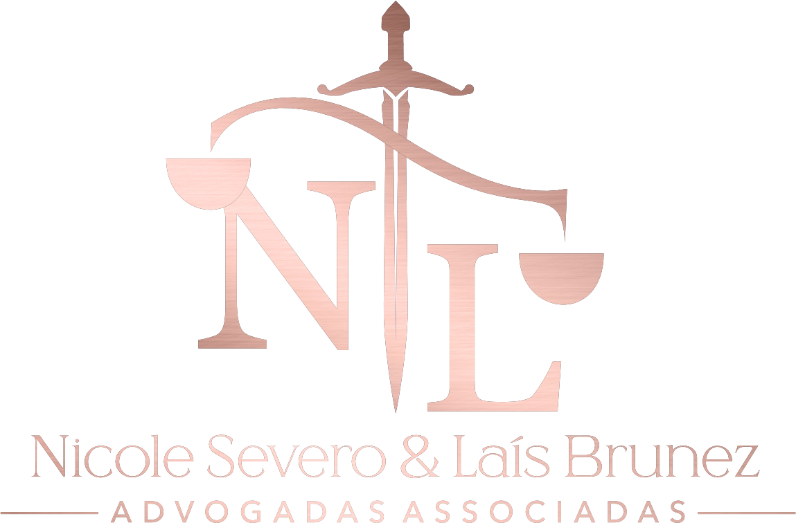

Especialistas em Direito de Família:
Soluções Jurídicas Humanizadas e Eficazes para o Seu Caso
Com mais de 8 anos de experiência e atuação internacional, oferecemos suporte jurídico de alta complexidade em divórcios, partilha de bens, pensão alimentícia e guarda. Atendimento estratégico e discreto para proteger o que é mais importante para você.
Especialidades: Atuação Estratégica em Direito de Família
Soluções jurídicas personalizadas para momentos de transição, focadas na preservação do seu patrimônio e na proteção dos seus interesses familiares.
Divórcio Consensual
Assessoria ágil e amigável focada na composição de acordos harmônicos e céleres.
Divórcio Litigioso
Defesa e representação técnica combativa com foco em assegurar seus direitos em juízo.
Partilha de Bens
Planejamento estratégico de patrimônio para divisões justas e proteção de ativos.
Pensão Alimentícia
Ações de fixação, revisão ou exoneração de alimentos de forma justa.
Guarda dos Filhos
Definição de regimes de convivência visando o melhor interesse das crianças.
Regulamentação de Visitas
Estabelecimento de calendários claros, flexíveis e equilibrados para a convivência.
Reconhecimento de União Estável
Formalização legal e segurança dos direitos patrimoniais e sucessórios de casais.
Dissolução de União Estável
Resolução jurídica e partilha estratégica de patrimônio na quebra de união.
Excelência e Dedicação:
A Trajetória da Brunez & Severo Advocacia
Fundado por advogadas pós-graduadas e especialistas em Direito de Família, o escritório Brunez & Severo Advocacia consolidou sua reputação sob a égide da discrição, da excelência técnica e do acolhimento humano. Com mais de 8 anos de sólida atuação no mercado, a banca assessora demandas de alta complexidade, garantindo a proteção patrimonial e familiar de seus constituintes.
Nossa expertise transcende fronteiras: com uma estrutura moderna e atendimento digital estratégico, representamos clientes em todo o território nacional e em diversos países do exterior, como Canadá, Portugal, Irlanda, Estados Unidos, Austrália e Itália. Compreendemos que questões de família exigem mais do que rigor processual; demandam sensibilidade jurídica para guiar transições delicadas com segurança, ética e o máximo sigilo profissional.
Conheça Nossa Assessoria JurídicaPor que escolher a Brunez & Severo Advocacia?
Uma estrutura focada na excelência, discrição e agilidade.
Expertise de Alta Complexidade
Preparação técnica qualificada para gerenciar litígios volumosos e partilhas financeiras sofisticadas.
Atuação Internacional
Estrutura apta a atuar remotamente em favor de clientes que residem fora do Brasil com celeridade.
Formação Especializada
Advogadas constantemente atualizadas com as melhores teses jurisprudenciais de Família e Sucessões.
Atendimento Estratégico e Discreto
Segurança total na tramitação processual, resguardando a privacidade familiar em todos os atos.
Suporte Humanizado
Acolhimento contínuo, compreendendo as dores e dinâmicas emocionais de cada núcleo familiar.
Perguntas Frequentes: Orientações Jurídicas Importantes
Esclareça suas principais dúvidas sobre procedimentos no Direito de Família.
Entre em Contato: Estamos Prontos para Orientar Você
Sua jornada jurídica exige atenção personalizada e estratégica.